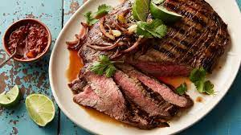

Carne Asada

Description
Simple authentic Carne asada recipe recipe you can enjoy with a cold beer.
Ingredients
- Package of carne asada meat. Preferrably precut.
- Bbq grill
- 1 tbsp Salt
- 1 tbsp olive oil
- 3 tbsp Seasoning salt
Steps
- Take the meat out of the package
- Turn on the gas grill to medium high heat.
- Mix seasoning salt and oil together and rub on the meat. Let sit for about 20 minutes
- Throw the meat on the grill and cook each side for roughly 5 minutes.
- Enjoy with a cold beer.